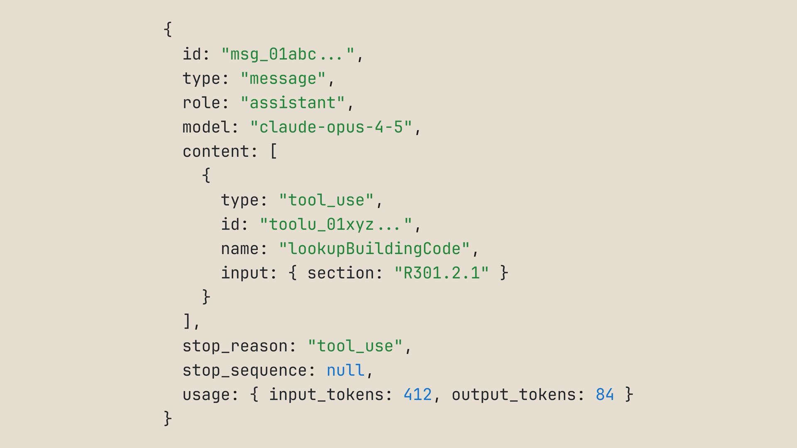
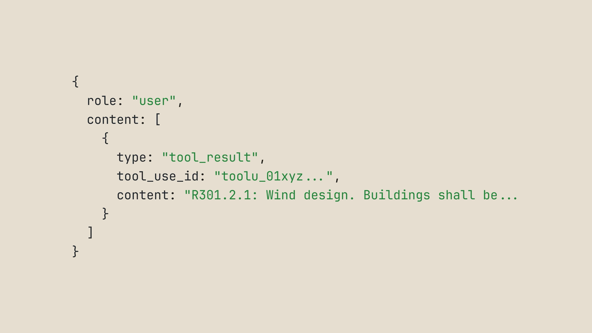
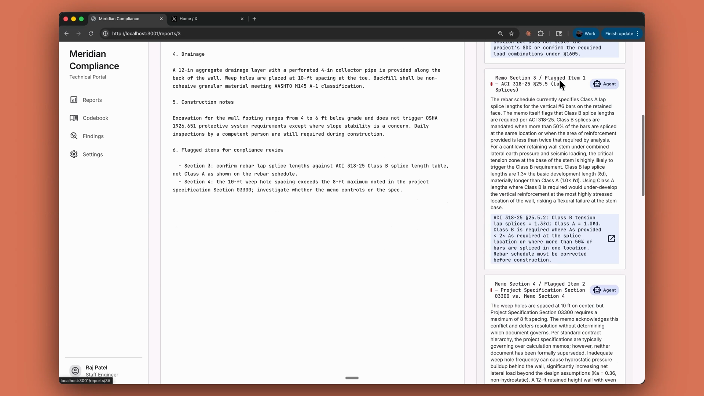

Что такое tool use
Чему научитесь
Видео 4:38 и текст урока
К концу урока вы сможете:
- объяснить, что такое инструмент и почему его выполняет ваш код, а не Claude;
- задать инструмент через имя, описание и схему входных данных и написать описание, по которому Claude выберет нужный инструмент;
- построить цикл:
stop_reason: "tool_use"→ вызов функции →tool_result, в том числе для нескольких инструментов; - заменить ручной цикл на tool runner из SDK.
Видео и текст урока.
Ваши рабочие процессы опираются на множество разных технологий: системы управления проектами, базы данных, файлы. Сам Claude заглянуть во всё это не может. Вместо этого он полагается на инструменты — они дают Claude доступ к внешним данным и действиям.
Что такое инструмент
Проще говоря, инструмент — это функция, которую вы определяете и предоставляете Claude. Вы описываете, что она делает и какие входные данные принимает, а Claude решает, когда её вызвать.
Главное, что нужно усвоить: инструмент выполняет не Claude, а ваш код. Схема такая:
- Claude запрашивает вызов инструмента.
- Ваш код выполняет функцию.
- Результат возвращается к Claude, и он продолжает работу.
Как определяют инструменты
Инструменты — это JSON-схемы из трёх частей: имя, описание и схема входных данных. Их передают Claude в теле запроса, в массиве tools.
Именно описание читает Claude, решая, вызывать ли инструмент. Напишете расплывчатое описание — Claude будет плохо пользоваться инструментами. Это главная причина, по которой агенты ошибаются или не пользуются доступными им инструментами. Пишите конкретно.
Вот как выглядит определение инструмента:
{
"name": "lookup_building_code",
"description": "Look up a specific building code section by its identifier. Returns the full text of that code section.",
"input_schema": {
"type": "object",
"properties": {
"section": {
"type": "string",
"description": "The building code section to look up"
}
},
"required": ["section"]
}
}
Что же происходит, когда мы его используем? Допустим, мы отправляем агенту отчёт, который нужно проверить на соответствие строительным нормам. На первом ходе Claude возвращает stop_reason: "tool_use" — это наш сигнал. Вот как выглядит такой ответ:

stop_reason: "tool_use", а блок tool_use называет инструмент и входные данные для него.Наш цикл вызывает lookup_building_code с параметром, который запросил Claude, а затем возвращает полученные данные как результат инструмента (tool result) — сообщение пользователя с блоком tool_result, привязанным к id вызова инструмента:

tool_result, в котором tool_use_id совпадает с id вызова.И Claude продолжает работу. Дальше можно снова и снова вызывать инструменты и возвращать Claude результаты, пока у него не будет всего, что нужно.
Несколько инструментов: пусть Claude выбирает
Один инструмент — это полезно, но самое интересное начинается, когда вы даёте Claude несколько инструментов и смотрите, какой он выберет и в каком порядке.
Представьте: вы собираетесь в трёхдневную поездку в Денвер и хотите узнать и сегодняшнюю погоду, и прогноз на ближайшие дни. Поэтому мы объявляем не один инструмент, а два:
const tools = [
{
name: "get_weather",
description: "Get today's current weather for a city.",
input_schema: {
type: "object",
properties: {
city: { type: "string", description: "The city to check" }
},
required: ["city"]
}
},
{
name: "get_forecast",
description: "Get the weather forecast for the next few days for a city.",
input_schema: {
type: "object",
properties: {
city: { type: "string", description: "The city to check" }
},
required: ["city"]
}
}
];
Цикл точно такой же, как в циклах агента, которые мы уже видели. Новое только одно — функция runTool, которая выбирает, что запустить, по имени инструмента с помощью оператора switch: этот блок кода — как раз то место, где на самом деле выполняется ваш код. Чтобы код можно было запустить, в нём есть ещё две заглушки с зашитыми данными и первое сообщение, а client берётся из урока «Первый запрос к API»:
// Two hardcoded lookups. In a real app, these would call a weather service.
const getWeather = (city) => `${city} today: 34F, snow flurries`;
const getForecast = (city) => `${city}, next three days: 38F, 45F, and 52F, sunny`;
const messages = [
{
role: "user",
content:
"I'm packing for a three-day trip to Denver. What's the weather today and over the next few days?",
},
];
function runTool(name, input) {
switch (name) {
case "get_weather":
return getWeather(input.city);
case "get_forecast":
return getForecast(input.city);
}
}
while (true) {
const response = await client.messages.create({
model: "claude-sonnet-5",
max_tokens: 1024,
messages,
tools,
});
if (response.stop_reason !== "tool_use") {
// Claude is done — this is the final answer
for (const block of response.content) {
if (block.type === "text") console.log(block.text);
}
break;
}
messages.push({ role: "assistant", content: response.content });
const toolResults = response.content
.filter((block) => block.type === "tool_use")
.map((block) => ({
type: "tool_result",
tool_use_id: block.id,
content: runTool(block.name, block.input),
}));
messages.push({ role: "user", content: toolResults });
}
Вот и весь шаблон. Нужен третий инструмент? Добавьте его в массив, добавьте case в switch — и готово.
Запустите этот код, и вы увидите, как Claude вызывает get_weather, а затем get_forecast — иногда за один ход, иногда один за другим. Потом он отвечает: берите одежду, которую можно надевать слоями, сегодня ждите лёгкого снега, а в течение недели будет теплеть.
Теперь обратите внимание, как Claude выбирал. Он прочитал описания, сопоставил ваш промпт с «today's weather» и «the next few days» и для каждой части подобрал нужный инструмент. Вот почему описания инструментов так важны.
Tool runner: без шаблонного кода
Вы, наверное, уже заметили в только что написанном коде два тревожных сигнала:
- Это много кода для двух простых запросов.
- В настоящей кодовой базе не хочется писать JSON-схемы вручную для каждой функции. Это всё равно что писать код дважды.
Тут и пригодится tool runner. Он есть в Claude SDK (пока в бете): для TypeScript, Python, Ruby, C#, Go, Java и PHP. Каждый инструмент вы определяете один раз, а runner сам ведёт весь цикл tool use / tool result.
В TypeScript рекомендуемый помощник для runner — betaZodTool(). Он описывает каждый инструмент короткой схемой на Zod — библиотеке TypeScript для описания и проверки структуры данных. Помощнику нужен Zod 3.25.0 или новее — свежая установка как раз такую версию и поставит:
npm install zod
Ваш код сводится к трём шагам: описать инструмент, отправить промпт, дождаться результата. Вот тот же пример с погодой и двумя инструментами, но через tool runner:
import { betaZodTool } from "@anthropic-ai/sdk/helpers/beta/zod";
import { z } from "zod";
// Wrap the same two lookups we ran by hand, each with a short Zod schema
const weatherTool = betaZodTool({
name: "get_weather",
description: "Get today's current weather for a city.",
inputSchema: z.object({
city: z.string().describe("The city to check"),
}),
run: async ({ city }) => getWeather(city),
});
const forecastTool = betaZodTool({
name: "get_forecast",
description: "Get the weather forecast for the next few days for a city.",
inputSchema: z.object({
city: z.string().describe("The city to check"),
}),
run: async ({ city }) => getForecast(city),
});
const runner = client.beta.messages.toolRunner({
model: "claude-sonnet-5",
max_tokens: 1024,
messages: [
{
role: "user",
content:
"I'm packing for a three-day trip to Denver. What's the weather today and over the next few days?",
},
],
tools: [weatherTool, forecastTool],
});
// Await the runner to get the final message after all the tool ping-pong has settled
const finalMessage = await runner;
for (const block of finalMessage.content) {
if (block.type === "text") console.log(block.text);
}
Тот же сценарий, но кода в разы меньше:
- Нет цикла while, нет ветвления по stop reason, не нужно вручную добавлять результаты инструментов в messages — всё это делает runner.
- Нет написанных вручную JSON-схем — только короткая схема Zod на каждый инструмент, которая к тому же проверяет входные данные, присланные Claude.
- Каждая функция
runоборачивает тот же запрос, который мы минуту назад выполняли вручную. - Если дождаться runner через
await, он вернёт итоговое сообщение ассистента, когда всё уляжется.
Запустите — и получите тот же ответ.
Настоящие инструменты оборачивают ваш код
В реальной жизни ваши инструменты не будут возвращать зашитые данные о погоде. Они будут оборачивать настоящие функции, которые уже есть в вашем приложении.
Возьмём агента, который проверяет документы на соответствие строительным нормам: его инструменты — тонкие обёртки над функциями lookup_building_code и search_building_code, которые уже есть в кодовой базе. С tool runner каждую из этих функций вы оборачиваете в короткое определение инструмента со своей схемой Zod, и в каждом замечании агент ссылается на конкретные разделы норм:

Итог
- Инструменты дают Claude доступ к вашим системам. Инструмент — это функция, которую вы определяете и предоставляете Claude; Claude решает, когда её вызвать, а выполняет её ваш код.
- Инструменты — это JSON-схемы с именем, описанием и схемой входных данных; их передают в запросе в массиве
tools. - Пишите конкретные описания. Расплывчатые описания — главная причина, по которой агенты ошибаются.
stop_reason: "tool_use"— сигнал выполнить инструмент и вернуть результат как tool result.- Когда инструментов несколько, выбирайте функцию по имени инструмента. Чтобы добавить инструмент, достаточно дописать его в массив и добавить
case. - Tool runner из SDK (в бете во всех Claude SDK) ведёт весь цикл сам, а в TypeScript каждый инструмент — короткое определение со схемой Zod. А можно вести цикл и самому.
- Цикл можно выполнять самому, а можно делегировать. На дальнем краю этого спектра — managed agents: с ними Anthropic берёт на себя всего агента.
Дальше
Следующий урок — «Что такое thinking»: как Claude может обдумать задачу шаг за шагом, прежде чем ответить, и когда это действительно помогает.
Оригинал урока: What is tool use?.